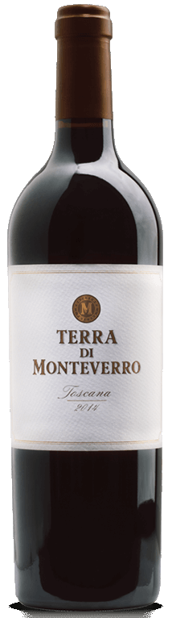
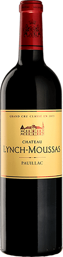
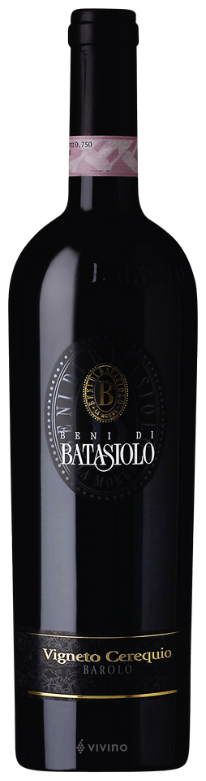

Terra di Monteverro
Producer: Monteverro
Country: Italy
Region: Toscana
Year: 2014
Blend: 40% Cabernet Sauvignon, 35 % Cabernet Franc, 20% Merlot, 5% Petit Verdot
Price: 32 CHF

Château Lynch-Moussas
Producer: Château Lynch-Moussas
Country: France
Region: Bordeaux
Year: 2016
Blend: 83% Cabernet Sauvignon, 17% Merlot
Price: 36 CHF

Barolo Cerequio
Producer: Beni di Batasiolo
Country: Italy
Region: Piemont
Year: 2011
Blend: 100% Nebbiolo
Price: 44 CHF
Fusion V
Producer: De Toren
Country: South Africa
Region: Stellenbosch
Year: 2017
Blend: 52% Cabernet Sauvignon, 16% Malbec, 14% Cabernet Franc, 11% Merlot, 7% Petit Verdot
Price: 54 CHF